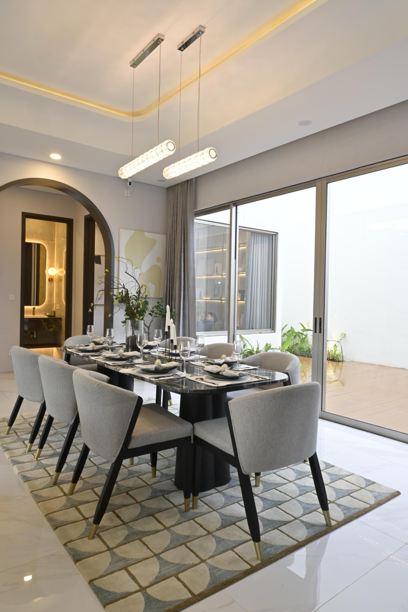

The Open Residence
Room for life to unfold.
A connected living and dining space, softened by curves and natural light. A villa concept built around the pleasure of spending time together.
- Concept
- Villa concept
- Photography
- Daniel Lee
- About this study
- Fictional concept. Reference photography.

Connected, with room to breathe.
The curved opening gives the room a quiet focal point. Pale surfaces carry daylight across the space, while darker furniture provides definition.

A softer kind of structure.
Long curtains, a textured rug and gentle lighting balance the room’s harder surfaces. The result feels composed, but never rigid.
All concepts